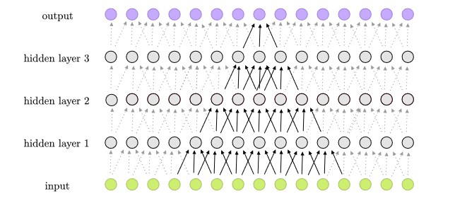

Rețelele neurale sunt formate din neuroni artificiali organizați în straturi.

Fiecare neuron primește date de intrare, le procesează și transmite rezultatul mai departe. Procesul de învățare se realizează prin ajustarea ponderilor conexiunilor dintre neuroni, pe baza erorilor calculate.